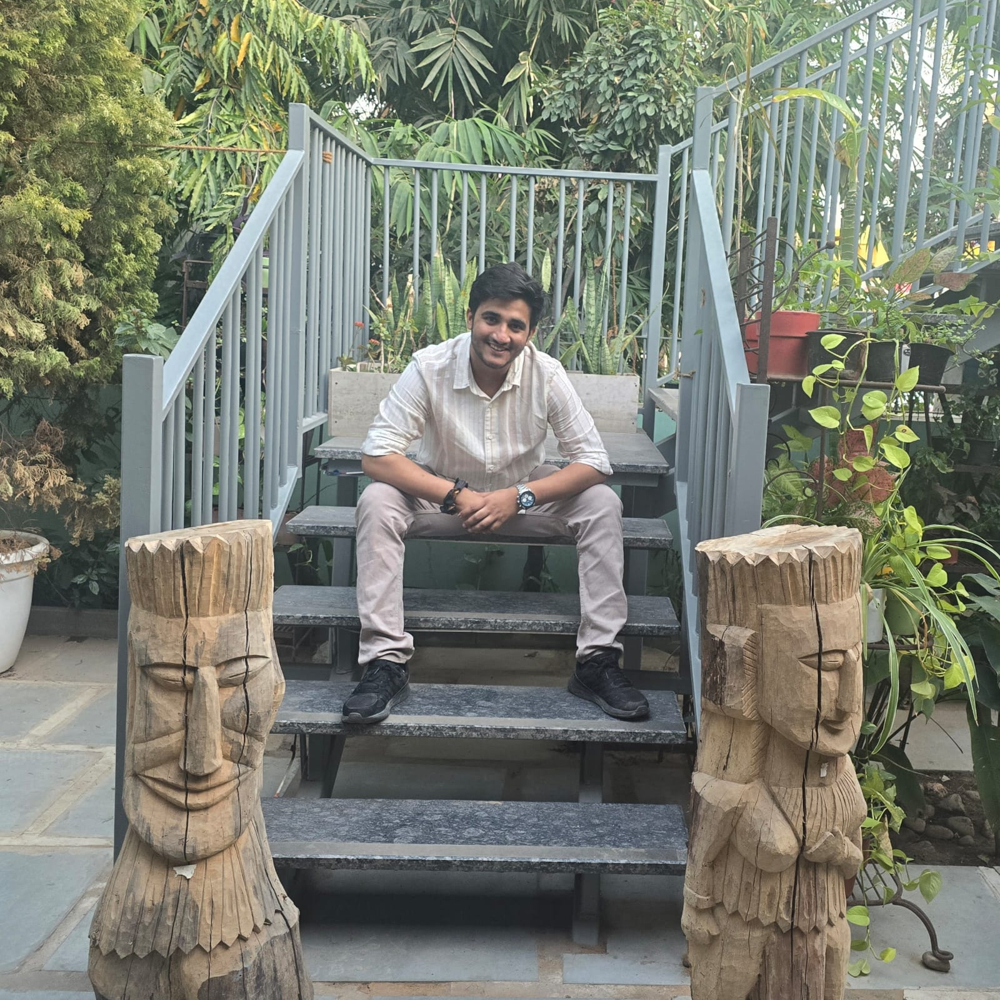

Shivansh Pareek
Software engineer with 3 years of experience shipping production Generative AI, RAG, agentic, and multimodal systems, alongside cloud infrastructure and backend platforms running at enterprise scale — across the full lifecycle: model integration, API/microservice architecture, cloud deployment, and CI/CD.
About Me

I'm passionate about building impactful AI solutions and robust backend systems — from RAG pipelines and agentic workflows to the cloud infrastructure that keeps them running at scale. I have a strong inclination toward teaching and mentoring, and I continuously look for the next thing worth learning. Outside of tech, I dig into cricket analytics and enjoy exploring new cultures through travel.
Experience
A quick log of where I've built things, roughly newest first.
Cloud & AI Engineer — watsonx / IBM Cloud ISDL
- Built AI-powered Slack agents using RAG, LLMs, and agentic workflows for automated issue resolution, including automated Dockerfile validation integrated with watsonx.ai.
- Developed watsonx.ai productivity tools integrating GitHub and Monday.com for automated work tagging and repository analysis, deployed via IBM Cloud Code Engine.
- Engineered IBM Cloud Dreadnought base images across UBI, Java, Python, Go, and NGINX — top images exceeded 68K+ pulls.
- Modernized the build system, migrating Bash to Go and adopting Docker Buildx Bake — cutting build time from 60 to ~30 minutes.
- Contributed to the Jenkins-to-Tekton migration and multi-architecture (ARM) builds; streamlined UBI9/UBI10 branching and release processes.
AI Software Engineer
- Designed Node.js backend APIs with context-aware search over enterprise images, videos, and media assets, cutting manual lookup time by 35%.
- Built a Generative AI template-generation platform (LangChain, smart cropping, scene detection, masking) producing 4+ templates in under 16 seconds — speeding up content creation by 40%; later migrated to AWS/Amazon Bedrock in production.
- Architected modular Flask/FastAPI microservices with Docker, PostgreSQL, and S3, lifting throughput by 25% via session pooling and multithreading.
- Built a text-to-video semantic similarity pipeline with FAISS and multimodal embeddings — processing 1,000+ videos at sub-4s average response time.
- Ran computer vision and generative AI experimentation across SDXL and AWS Lambda inference; mentored interns in AI and backend engineering.
Backend Developer Intern
- Built REST APIs for the NADOS learning platform serving 10,000+ weekly users at 99.9% uptime.
- Automated workflows with Puppeteer and optimized database queries, cutting server load by 18%.
- Mentored 50+ students weekly in DSA and interview preparation, earning a 4.8/5 learner rating.
Education
Technical Skills
Notable Achievements
Enterprise impact
Engineered and shipped a commercial Generative AI product at Samsung, spanning RAG, vector search, multimodal AI, and backend architecture.
View projects →Certifications
IBM Containers & Kubernetes Essentials · Samsung Generative AI Levels 1–3 · Samsung SWC Advanced & Professional Problem Solving (Top 30%).
View certifications →Technical proficiency
Solved 500+ DSA problems and completed 100+ hours of upskilling through IBM Learning.
Outside of Work
A teaching channel where I break down coding, DSA, and AI concepts into short, practical videos — an extension of the mentoring I do at work.